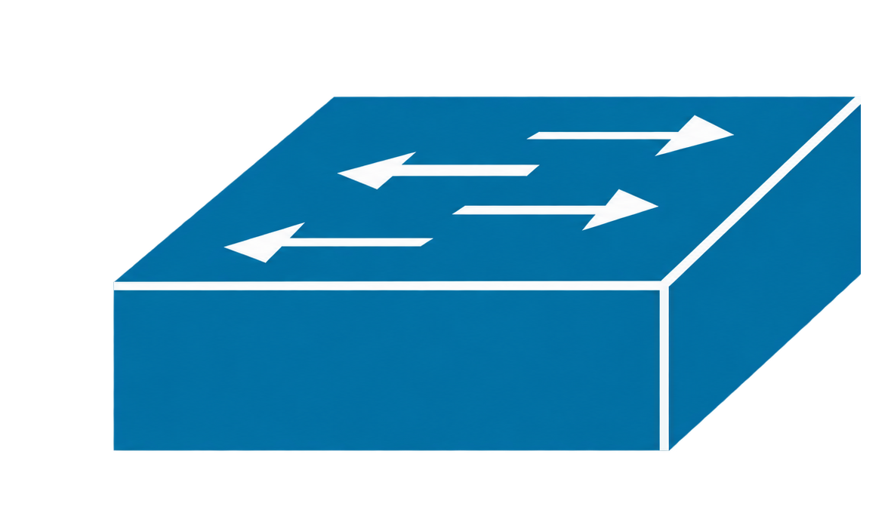

Módulo 01
Entender EtherChannel.
EtherChannel reúne varios enlaces físicos y hace que los switches los utilicen como un solo enlace lógico más resistente y con mayor capacidad.
Imagina una carretera más ancha
Piensa en dos switches conectados por una sola carretera. Si aumenta el tráfico, esa carretera puede convertirse en un punto estrecho. Si agregas otra carretera sin preparar la red, Spanning Tree podría dejar una en espera para evitar un bucle.
EtherChannel funciona como si uniera esas carreteras para formar una vía más ancha. Los cables siguen existiendo por separado, pero los switches los presentan como una única interfaz llamada Port-channel.

Cada lado del cuadrado utiliza dos enlaces físicos. Los grupos 1 y 3 trabajan con PAgP; los grupos 2 y 4, con LACP. Los PC permiten comprobar las VLANs 10, 20 y 30, mientras la VLAN 99 se utiliza como nativa. La práctica guiada comenzará configurando el grupo 1.
Qué beneficios entrega
- Más capacidad: el tráfico puede repartirse entre varios enlaces físicos.
- Redundancia: si un cable falla, los enlaces restantes pueden seguir transportando tráfico.
- Una sola interfaz lógica: el grupo se administra como un Port-channel.
- Trabajo junto a STP: Spanning Tree observa el grupo como un solo enlace lógico, no como varios caminos independientes.
Formas de construirlo
Existen tres formas comunes. Por ahora basta con reconocerlas; esta práctica utilizará PAgP.
- Estático: se fuerza el grupo con el modo
on, sin negociar. - PAgP: protocolo de Cisco que utiliza los modos
desirableyauto. - LACP: estándar abierto que utiliza los modos
activeypassive.
En el siguiente módulo veremos cómo PAgP permite que ambos switches conversen antes de formar el canal.